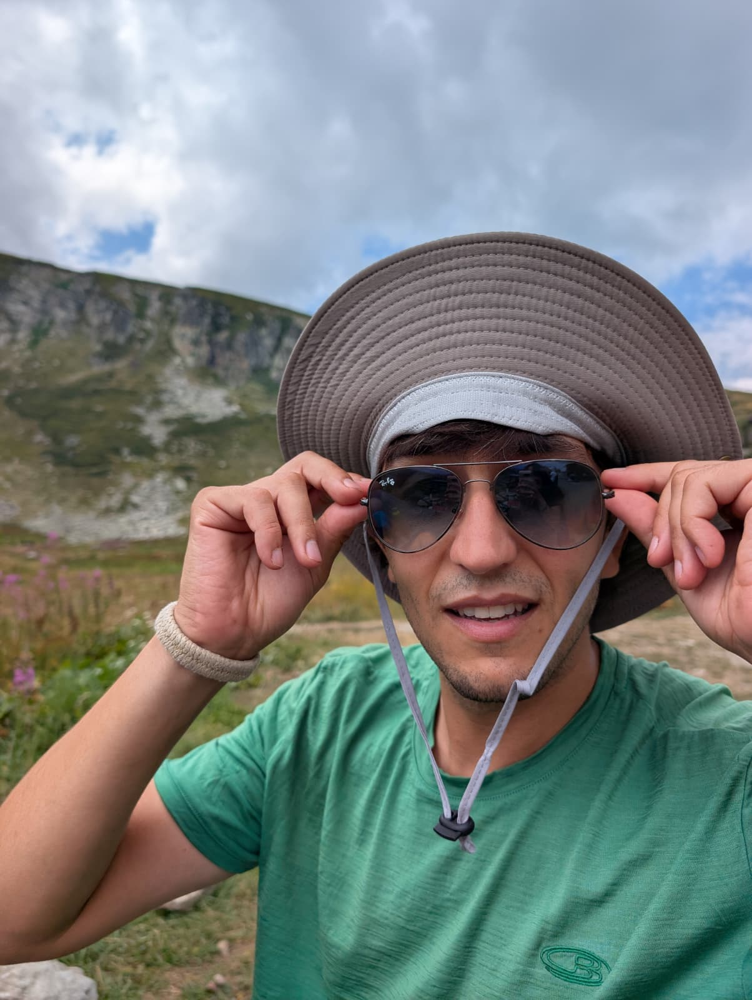

Theoretical physics Madrid
EduardoGarcía-Valdecasas
Assistant Professor · Ayudante DoctorFísica Aplicada · ETSIAE · Universidad Politécnica de Madrid
I’m a theoretical physicist and Assistant Professor at UPM’s School of Aeronautical and Space Engineering in Madrid. My work explores quantum field theory, string theory and holography, with a focus on symmetry. Lately, I have focused on the roles of symmetry in holography, its applications to particle phenomenology, and quantum information measures of symmetry breaking.
Before joining UPM in October 2026, I held postdoctoral positions at SISSA, Harvard and the Université libre de Bruxelles. My stay at Harvard was supported by a Margarita Salas award.

Research interests
Academic background
From Madrid,
and back.
My research has taken me from Madrid to London, Brussels, Harvard and Trieste, and back to Madrid.
- 2026 —Universidad Politécnica de MadridAssistant Professor · Applied Physics · ETSIAE
- 2023–2026SISSA, TriestePostdoctoral researcher · Theoretical Particle Physics
- 2022–2023Harvard UniversityPostdoctoral fellow · Margarita Salas award
- 2019–2022Université libre de BruxellesPostdoctoral researcher
2015–2019
PhD in Theoretical Physics
Universidad Autónoma de Madrid
Supervisor: Ángel M. Uranga
2014–2015
MSc, Quantum Fields & Fundamental Forces
Imperial College London
2010–2014
BSc in Physics
Universidad Autónoma de Madrid
Research & conversation
For research discussions, prospective PhD projects or a physics talk at your school, I’d be happy to hear from you.